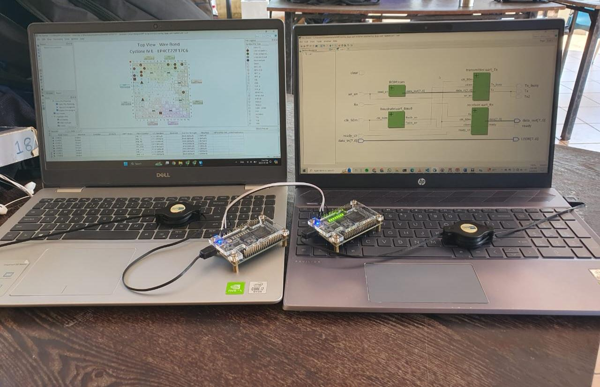

Hardware Implementation of Universal Asynchronous Receiver-Transmitter Protocol on Intel FPGA using Verilog HDL
This project involves the design and implementation of a UART (Universal Asynchronous Receiver-Transmitter) communication protocol on an Intel FPGA development board. UART is one of the most widely used serial communication protocols for asynchronous data transmission between devices.
The implementation was done using Verilog HDL and tested on Intel FPGA hardware using ModelSim for simulation and Quartus Prime for synthesis and deployment. The project demonstrates fundamental digital design concepts including finite state machines, clock domain management, and serial communication protocols.
Intel FPGA development board setup with UART testing environment
Implemented both transmitter and receiver modules for simultaneous bidirectional data transfer, allowing independent transmission and reception of serial data.
Designed with adjustable baud rate generator supporting standard rates (9600, 19200, 38400, 115200 bps) for flexible communication speed control.
Utilized finite state machines (FSM) for both TX and RX modules to handle start bits, data bits, stop bits, and idle states efficiently.
Implemented parity bit checking and frame error detection to ensure reliable data transmission and identify communication errors.